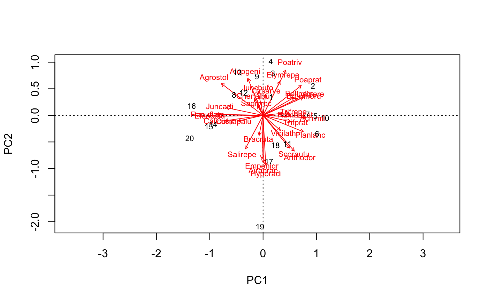
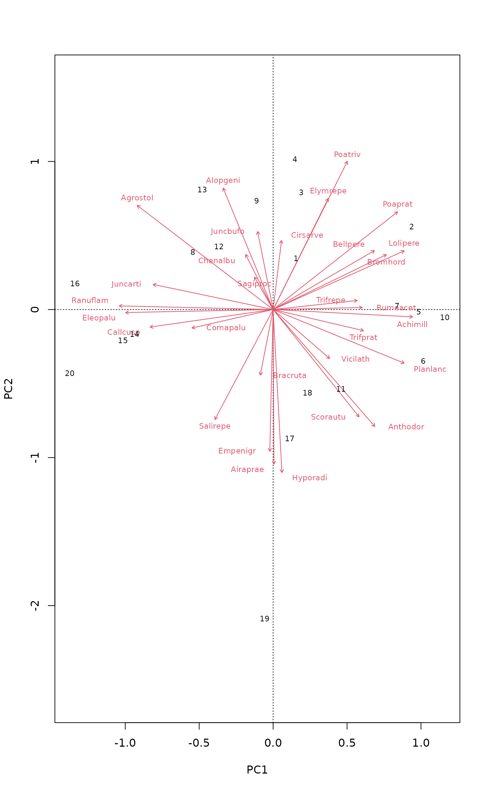
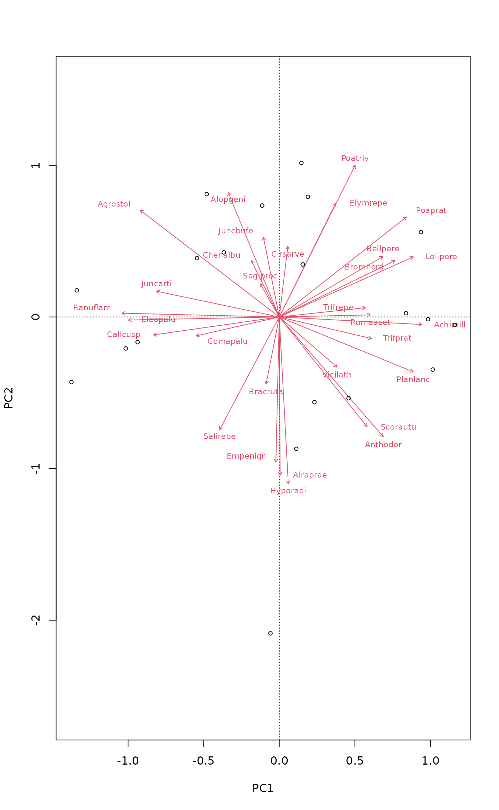
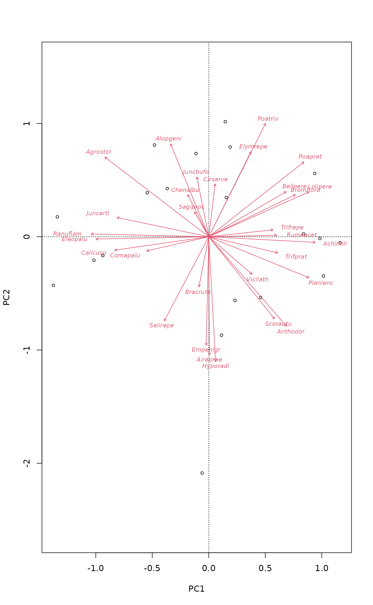

PCA biplot
biplot.rda.RdDraws a PCA biplot with species scores indicated by biplot arrows
Arguments
- x
A
rdaresult object.- choices
Axes to show.
- scaling
Scaling for species and site scores. Either species (
2) or site (1) scores are scaled by eigenvalues, and the other set of scores is left unscaled, or with3both are scaled symmetrically by square root of eigenvalues. With negative scaling values inrda, species scores are divided by standard deviation of each species and multiplied with an equalizing constant. Unscaled raw scores stored in the result can be accessed withscaling = 0.The type of scores can also be specified as one of
"none","sites","species", or"symmetric", which correspond to the values0,1,2, and3respectively. Argumentcorrelationcan be used in combination with these character descriptions to get the corresponding negative value.- correlation
logical; if
scalingis a character description of the scaling type,correlationcan be used to select correlation-like scores for PCA. See argumentscalingfor details.- display
Scores shown. These must some of the alternatives
"species"for species scores, and/or"sites"for site scores.- type
Type of plot: partial match to
textfor text labels,pointsfor points, andnonefor setting frames only. If omitted,textis selected for smaller data sets, andpointsfor larger. Can be of length 2 (e.g.type = c("text", "points")), in which case the first element describes how species scores are handled, and the second how site scores are drawn.- xlim, ylim
the x and y limits (min, max) of the plot.
- col
Colours used for sites and species (in this order). If only one colour is given, it is used for both.
- const
General scaling constant for
scores.rda.- ...
Other parameters for plotting functions.
Details
Produces a plot or biplot of the results of a call to
rda. It is common for the "species" scores in a PCA to
be drawn as biplot arrows that point in the direction of increasing
values for that variable. The biplot.rda function provides a
wrapper to plot.cca to allow the easy production of such a
plot.
biplot.rda is only suitable for unconstrained models. If
used on an ordination object with constraints, an error is issued.
If species scores are drawn using "text", the arrows are drawn
from the origin to 0.85 * species score, whilst the labels are
drawn at the species score. If the type used is "points", then
no labels are drawn and therefore the arrows are drawn from the origin
to the actual species score.
Value
The plot function returns invisibly a plotting structure which
can be used by identify.ordiplot to identify
the points or other functions in the ordiplot family.
Author
Gavin Simpson, based on plot.cca by Jari Oksanen.
Examples
data(dune)
mod <- rda(dune, scale = TRUE)
biplot(mod, scaling = "symmetric")

## plot.cca can do the same
plot(mod, scaling = "symmetric", spe.par = list(arrows=TRUE))

## different type for species and site scores
biplot(mod, scaling = "symmetric", type = c("text", "points"))

## We can use ordiplot pipes to build similar plots with flexible
## control
plot(mod, scaling = "symmetric", type="n") |>
points("sites", cex=0.7) |>
text("species", arrows=TRUE, length=0.05, col=2, cex=0.7, font=3)
